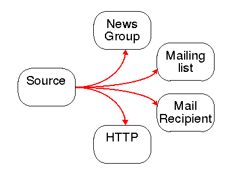
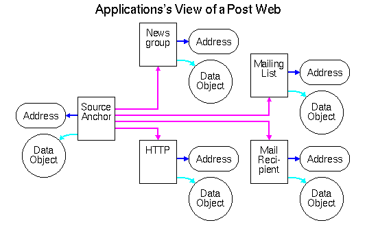
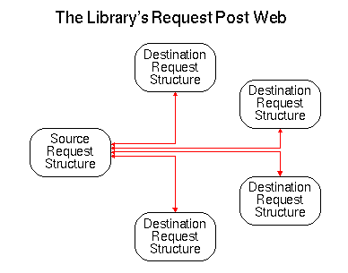
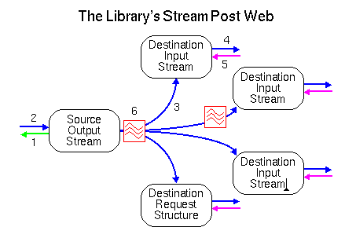

The HTTP PUT and POST are required features when extending the Web to a fully collaborative tool with features like remote authoring, annotations, update of data bases etc. Many Web applications are currently capable of transferring data from HTML forms to a HTTP server. However, form data is typically small amounts of text based data, and a more generic mechanism is needed for transmitting an arbitrary data object to any kind of remote server. This document describes how this functionality can be provided by the "Post Web" model and how this model interacts with the user, the application, and the W3C Sample Code Library. One of the advantages of this model is that it does not require any modification, neither to the HTTP/1.0 specification nor to the HTML form definition.
A "Post Web" is used as an abstraction mechanism for enabling the user to perform multiple operations (methods) on a data object rendered in multiple representations determined for multiple destinations. This may seem complicated but the Post Web is in fact a very simple model as will become clear in the following sections. The purpose of the Post Web is to take a set of common situations from the world of email and news; merge it with the features of HTTP, and put the result into the Web model. This leads to the following set of requirements:
The Post Web model provides a homogeneous interface to a post operation regardless of the destination, the specific method, and the data format used. It describes the full operation from defining the source and destinations to actually transfer the data over the network. This process involves there players: the user, the application, and the W3C Sample Code Library. Each of these uses the Post Web model but on different levels of abstraction:
The following paragraphs describe the three layers of abstraction, how they are interconnected and thus defining the Post Web model.
For all the possible destinations in a Post Web, the user can specify what method should be applied, any relations between the source and any of the destinations, and if any data for conversion should be performed. The relations are semantically identical to the HTML "Link" tag and the HTTP "Link" header, and it can for example describe authorship, relations to other data objects etc.
The description of the Post Web model includes a basic example in which a user wants to post the same data object or variations thereof to two mailing lists, a news group and at the same time store the data object on a remote HTTP server. This scenario can be graphically represented as a Post Web consisting of five nodes: one source and four destinations:

This document does not specify the user interface for building a Post Web as this is tightly connected to the platform involved, but obviously it should take advantage of any graphic features etc. Typically a GUI-client could use drag-and-drop icons for building the Web. For example, the Post Web could be visualized using a collection of icons representing commonly used recipients and then let the user drag lines between the data object to be posted and the recipients.
When the user has finished specifying the source, the destinations, the methods, and any relations between them, the user's version of the Post Web is ready to be submitted and the application can take the information and convert it to a lower abstraction level.
While the description of the user's view of a Post Web is fairly abstract, an actual application must transform the information into a specific representation supported by the Library. To the application, the Post Web is a request for change in the topology of the Web. The application can describe this change using anchor objects which is the Library's representation of the Web where each node represents a data object or a subpart of a data object that the application has been in contact with while browsing on the Web.
In the figure below, each of the four anchors has a data object and a URL related to it. Any of the addresses or data objects may or may not exist when the Post Web is submitted by the application. If the source does not exist then this will result in an error, but if a destination data object does exist then the post operation is committed then might result in replacement, deletion, update, or any other outcome as a result of the method applied.

The Library provides an API for handling anchor objects including how to link the objects together as indicated in the figure above. This is explained in more detail in the User's Guide.
When the application has bound the source anchor to the destination anchors with the appropriate methods and link relations, the Post Web can be handed over to the Library in order to transfer the data object from the source to the destinations. The Library is responsible for handling the actual protocol communication, and hence this part of the Post Web model is the lowest layer of abstraction. Therefore the design goals for this layer of the Post Web is somewhat more technical than the first two layers:
Internally, the Library represents a Post Web in two different ways: A static and a dynamic binding between the source the destinations. The static binding is created when the application issues the request, and it exists until all the sub-requests in the Post Web have reached a final state. The dynamic binding depends on the data flow and exists only as long as data is passed through the Post Web. The dynamic binding can be set up and taken down independently of the static binding, and often this happens multiple times during the handling of a request.
As described in the section "Core Objects ", the HTRequest object is one of the core objects used to describe a request from the application. This object is used in the static binding between the source and the destinations and it is initialized as soon as the request is passed to the Library from the application.

At this point no information is known about the data object itself, so the static binding only contains information about who the source and the destinations are. The dynamic binding carries information about data format, content length and other essential metainformation about the object. The dynamic binding is basically a stream chain that is established as this information gets available from the source server:

The application can use the result of the operation returned from the Library to either regard the change in the topology of the Web as successful, erroneous, or any degree in between. The application can use this information to for example update any graphical visualization of the part of the Web that the user has traversed.
The result of posting a data object varies from protocol to protocol. Typically transaction oriented protocols can provide an immediate result whereas relayed protocols can not. As a general rule in the design of the Library other protocols than HTTP should be supported but not extended beyond their individual limitations. This means that the Library has to be flexible enough to handle more than one result from a posting transaction dependent on the protocol used. As an example, an immediate result from a post transaction is available using NNTP or HTTP whereas the result from SMTP might be delayed several days. In practice there is no way that the application can await a response for that amount of time, and it should therefore be treated as "Accepted" with no guarantee of completeness.
The Library handles the update of the internal anchor representation of the Web by registering the outcome of each post operation and bind that to the link between the source and the destination. This allows the application to query how two anchors are related and what the outcome of the operation was that caused the link to be established.
@(#) $Id$